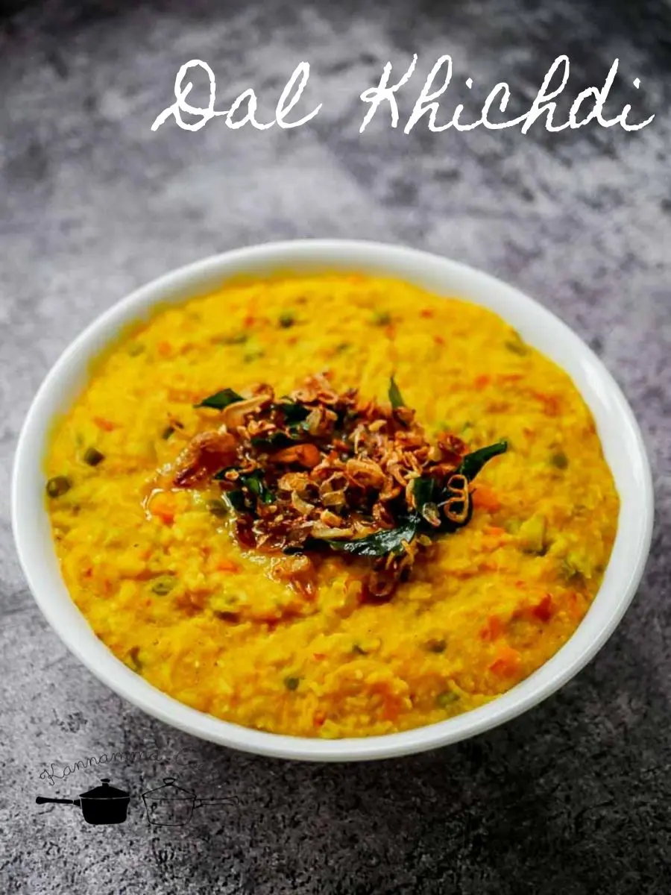

Dal-Khichdi

Description
Dal Khichdi is a warm, wholesome Indian comfort food made with rice and lentils, gently spiced and simmered into a soft, porridge-like consistency. Light on the stomach yet rich in flavor, it's often tempered with ghee, cumin, and a pinch of turmeric. Traditionally served with pickle, papad, or curd, Dal Khichdi is loved for its simplicity, nourishment, and ease of digestion. Perfect for a quick meal, a cozy night in, or when you're feeling under the weather — it's the ultimate one-pot soul food.
Ingredients
- 1/2 cup rice (basmati or regular)
- 1/2 cup yellow moong dal (split yellow lentils)
- 1 small onion, chopped (optional)
- 1 small tomato, chopped (optional)
- 1–2 green chilies, chopped (optional)
- 1 tsp ginger-garlic paste (optional)
Steps
- Rinse and Soak (Optional but Recommended):
- Wash the rice and moong dal together 2–3 times.
- Soak for about 15–20 minutes, then drain. (This helps them cook faster.)
- Sauté the Base:
- Heat 1–2 tbsp ghee or oil in a pressure cooker or heavy-bottomed pot.
- Add chopped onions (if using) and sauté until soft and slightly golden.
- Add ginger-garlic paste and stir for 30 seconds until fragrant.
- Add green chilies and chopped tomato. Cook for 2–3 minutes until tomatoes soften.
- Add Rice and Dal:
- Add the drained rice and dal to the pot.
- Stir everything well to combine with the masala
- Add Water and Salt:
- Add about 3.5 to 4 cups of water (use more for a softer, porridge-like texture).Add about 3.5 to 4 cups of water (use more for a softer, porridge-like texture).
- Add salt to taste.
- Optionally, add 1/4 tsp turmeric powder for color and mild flavor.
- Cook:
- Pressure cooker: Close lid and cook for 3–4 whistles on medium heat.
- Pot method: Cover and cook on low heat, stirring occasionally, until rice and dal are soft and mushy (~30–40 minutes). Add water if needed.
- Serve:
- Once cooked, mash lightly for a smoother texture if desired.
- Serve hot with a drizzle of ghee on top, and optionally with papad, pickle, or curd.
Home